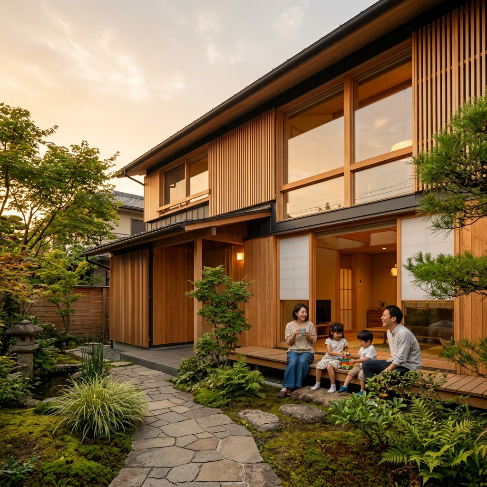
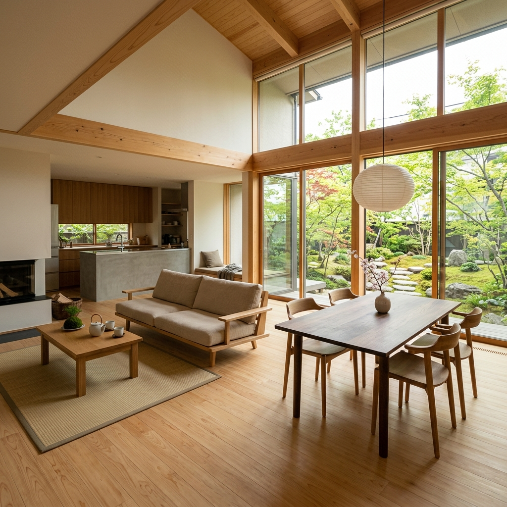

床に寝転がったとき、足の裏に触れる木の温もり。窓から差し込む光がつくる影の美しさ。そんな日常の豊かさを、一棟一棟に込めています。
私たちが大切にしているのは、30年後も「この家にしてよかった」と思っていただける家づくりです。
国産の無垢材は年月とともに色が深まり、艶が増していきます。新築のときが最高ではなく、住むほどに美しくなる。それが木の家の魅力です。
だからこそ、構造材はすべて国産の杉・檜を使用。壁には珪藻土、床には無垢のフローリング。化学物質を極力排した自然素材の家をお届けしています。

構造材から仕上げ材まで、すべて国産材を使用。産地の製材所と直接取引し、木の個性を活かした適材適所の木組みで家を建てています。
自社大工が棟上げから仕上げまで一貫して担当。機械では出せない手鉋（てがんな）の滑らかな肌触りを大切にしています。
太陽の光と風の通り道を計算した設計で、エアコンに頼りすぎない心地よい暮らしを実現。年間冷暖房費を平均40%削減しています。
引き渡し後も、1年・3年・5年・10年の定期点検を実施。構造躯体は30年保証。住んでからの安心を、ずっとお届けします。
世田谷区 / 35坪 / 2LDK+書斎 / ご夫婦+猫2匹
「老後まで心地よく」をテーマに計画した平屋。中庭を囲むL字型で、どの部屋からも緑が見える間取りに。
杉並区 / 32坪 / 4LDK / ご家族4人
「子どもが走り回れるリビングがほしい」。吹き抜けと大開口で明るく開放的なLDKを実現しました。
「最初は正直、無垢材の傷が心配でした。でも2年経って、子どもがつけた傷も飴色に馴染んでいくのを見て、この素材を選んで本当によかったと思っています。家族の歴史が床に刻まれていく感じです。」
「珪藻土の壁のおかげか、梅雨時でも家の中がサラッとしていて驚きました。以前のマンションでは結露がひどかったのに、今はまったくありません。冷暖房費が半分以下になったのも嬉しい誤算です。」
最初のご相談からお引渡しまで、一人の担当者がずっと寄り添います。
暮らし方のヒアリングからスタート。土地探しの段階から日当たり・地盤・建築条件を一緒に確認します。
間取り・素材・設備を一つずつ決定。3Dパースで完成イメージを共有しながら、納得いくまで何度でも修正します。
自社大工による施工。建築中はいつでも現場見学OK。完成後の検査を経て、新生活のスタートをお祝いします。
建物本体価格の目安です。土地代・外構工事は含みません。
※ すべて税込。設計費・確認申請費用を含みます。
世田谷にあるモデルハウスで、無垢材の肌触りや自然素材の空気感を体感いただけます。ご予約は2分で完了。